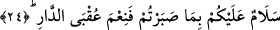
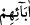

ikamet etmek ise sâdece kâmil mü’minlerin ereceği bir mazhariyettir. Kâmillik de ancak
yukarıdaki âyetlerde bahsedilen sekiz hasleti yerine getirmekle mümkündür. Allah’ın
seçkin kullarından hidâyet ettikleri dışında kimse bu hasletlerin altından kalkamaz ve
onlarla bezenemez.
“Oraya babalarından, eşlerinden ve çocuklarından sâlih olanlarla” onlar
kendilerinin ulaştığı dereceye ulaşamasalar da kendilerine tâbi olarak sevinçlerini
tamamlamak, şanlarını yüceltmek maksadıyla aralarına katılarak “beraber girecekler”
Bahru’l-ulûm’da der ki: “ (babalarından)” sözünden maksad babaları ve
analarıdır.
Eşlere hem “zevc” hem de “zevce” denir. Fakat zevc daha fasihtir.
Denilir ki: Cennetliklerin en büyük sevinçlerinden biri de bir araya gelip dünyadaki
durumlarını yâd ederek bu durumlardan kurtuldukları ve cenneti kazandıkları için
Allah’a şükretmeleridir.
Bu âyet, âhiretteki derecelerin şefâat ile yükselebileceğine delildir. Çünkü, kâmillere
sırf îman bakımından tâbî olmaları sayesinde kâmillerin şanının yüceltmekten dolayı
derecenin yükselmesi câiz olursa kâmillerin şefaati sayesinde yükselmesi daha
uygundur.
Yine kâmillerle beraber cennete girmenin sâlih olma şartına bağlanması da sâdece
neseb bağının fayda vermeyeceğine delâlet eder. Denmiştir ki:
Sidiğin aslı da tertemiz bir su iken,
Nesebim Ali’ye dayanıyor diye mi bunca iftihar?
Bizzat kendi çirkin davranışlarınla kirlettiğin
Tertemiz bir neseb sana ne fayda sağlar?
Asla nesle o kadar îtibar yoktur
Gülün yüzünün gülmesi dikenden değildir
Şarab koruktan ve şeker kamışından olur
Bal, arının kusmasından hâsıl olur
“Melekler de” köşklerinin kapılarından
“her
kapıdan
onların
yanına
varacaklardır.” Çünkü hepsinin makam ve menzillerinin kapıları olacak. Her kapıdan
bir melek onların huzûruna girecek:
24. (Melekler:) “Sabretmenize karşılık size selâm olsun! Dünya yurdunun sonu
(cennet) ne güzeldir!” (derler).
Melekler: “Sabretmenize karşılık” yâni bu büyük makama, bu yüce değere; dünyada